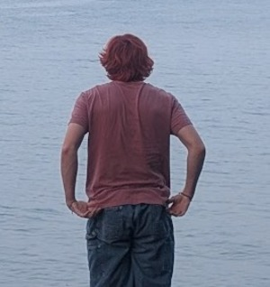

This is my first assignment in csce 242. This assignment was a bit confusing at first as I did most of it in the main html for the class and not in the assignment one subsection. moving the code and pictures around was not a challenge at all thanks to VS codes inface im really starting to like how its formatted.I am really looking forward to this class and I think it will gie me a good understaning on how to make web application.
This paragraph will be more about me; my name is Ian Repik, and I was born in Charleston, South Carolina, on April 23, 2007. I am not a U of SC student in the IMS college pathway. I don't know if I really like the idea of coding all that much, but I am finding web development interesting. Over the summer I picked up a new hobby, rock climbing. It's funny because most of the people I met skateboarding and have now also started to climb, so far the hardest climb I have done is a V3/4. I find claimbibg to be a lot of fun and a lot easer the skating, it is defanatly not cheaper, I think I like it so much do to the fact that you can do it inside and you dont have to learn a lot you can just climb, unlike sakting where its like learning hoe to walk all over agian.

top 5 songs right now
- Getaway Car-Audioslave
- Secret Society- Title Fight
- Everythinh Sux- Descendents
- Calypso- Spiderbait
- Simple Man-2005 Remaster- Deftones
| color | hex |
|---|---|
| red | #FF0000 |
| blue | #0000FF |
| green | #00FF00 |
Best Place For Volo Parts